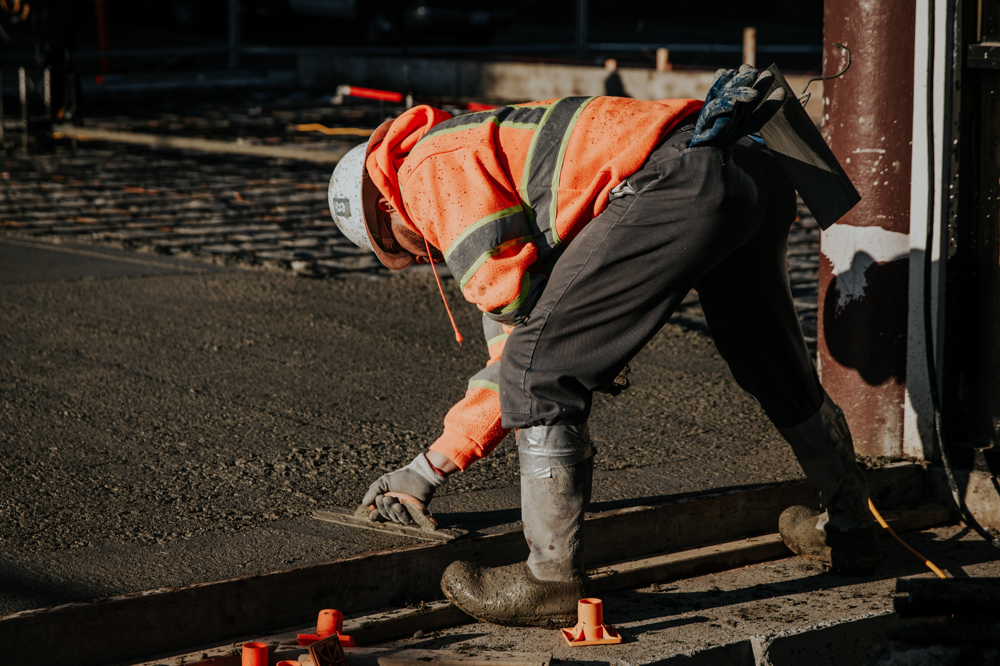

Civil



Pintura predial, recuperação de base de concreto, reforma de prédios e etc.
Oferecemos serviços excepcionais para atender suas necessidades.
Entre em ContatoTemos uma equipe dedicada e experiente pronta para oferecer as melhores soluções.
A SRM Service é uma empresa que nasce para atender uma demanda crescente do mercado Industrial e de Mineração por prestadoras de serviços especializadas e qualificadas.
Tendo seu quadro societário quase duas décadas de experiência nos setores citados, a SRM Service tem como premissa básica atender as demandas de seus clientes com segurança, qualidade, agilidade e confiabilidade. Para tanto, a SRM Service conta com uma sólida estrutura operacional composta por: Engenheiros e Técnicos habilitados nas diversas áreas em que atua.
Sendo assim, tem "know how" em diversos seguimentos da área industrial e de mineração, nas especialidades de: soldagem, caldeiraria, mecânica (dispõe de projetista com vasta experiência), civil (construção e renovação de estruturas de concreto e metálicas); rebaixamento de pisos, atirantamento de galerias, abertura e saneamento de raíse, etc.
Com uma administração integrada, parcerias especializadas, fornecedores confiáveis e planejamento estratégico, a empresa mentém uma produtividade eficiente capaz de responder com pontualidade, segurança e respeito ao meio ambiente aquilo que é requerido pelos seus clientes no escopo dos contratos.
Disponibilizar serviços de alta qualidade através de inovações tecnológicas, prezando a segurança, a saúde, o meio ambiente, de modo a responder as necessidades de produtividade dos clientes com EFICIÊNCIA e CONFIABILIDADE
Torna-se uma empresa cada vez mais reconhecida e respeitada no mercado nacional pela sua capacidade de executar serviços com PRIMOR e EFICÁCIA.
A SRM Service dispõe de um corpo técnico com vasta experiência no mercado. Investe constantemente em qualificação profissional através de treinamento das suas equipes e cursos de curta, média e longa duração.
Tal tem como objetivo o aprimoramento das suas práticas e a contínua melhoria dos seus processos de produção.
Por isso, a empresa busca a captação de profissionais diferenciados que assumem o compromisso de se manterem sempre atualizados com as demandas do mercado. Nesse sentido, estimula o aprimoramento através da valorização constante de seus colaboradores.
Desse modo, a SRM Service conta com uma equipe composta por profissionais especializados com vasta experiência técnica e gerencial.
Seu quadro de colaboradores é composta por: Engenheiros; Técnicos de Mineração, Segurança, Projetistas, Mecânica, Caldeiraria, dentre outros; Coordenadores e Gestores de Contrato; Operadores; Administrativos
Pintura predial, recuperação de base de concreto, reforma de prédios e etc.


Oferecemos serviços especializados na soldagem de tubulações de PEAD. Nossa equipe de soldadores qualificados realiza uma ampla gama de serviços de soldagem.


Produção de estruturas em metais, manutenção em equipamentos industriais.


Serviço de injeção de calda de cimento, serviço de perfuração e instalação de suporte de tubulação e recuperação de meio ambiente e montagem completa de linha de produção.